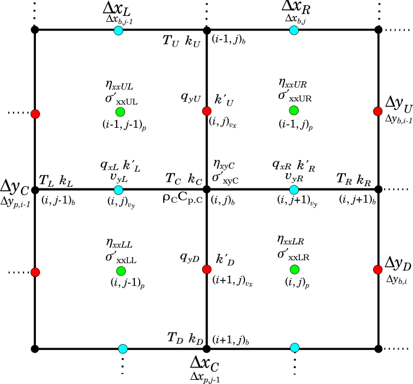

Discretization of Heat Conduction Equation
Coefficients and right-hand-side terms of the system of equations for the heat conduction equation are generated by looping over basic grid cells and discretizing the governing equations associated with unknowns $T$ using finite difference stencils where $T$ is the temperature unknown defined on the basic grid. The finite difference representation of the heat conduction equation is given by:
eq:heat-fd-representation
\[\begin{split} \rho_C C_{p,C} \frac{T_C - T_C^o}{\Delta t} = -\left(\frac{q_{xR} - q_{xL}}{\Delta x_C} + \frac{q_{yD} - q_{yU}}{\Delta y_C} \right)\\ + H_{rad,C} + H_{shear,C} + H_{adi,C} + H_{melt,C} + H_{exo,C} \end{split}\]
where $T_L$, $T_R$, $T_U$, and $T_D$ are the temperatures unknowns located to the left, right, up, and down of the central unknown temperature $T_C$, respectively, $T_C^o$ is the temperature from the previous time step and $q_{xL}$, $q_{xR}$, $q_{yD}$, and $q_{yU}$ are heat fluxes in the $x$ and $y$ directions, respectively, given by:
eq:heat_fluxes
\[\begin{split} q_{xL} & = -k'_L \frac{T_C - T_L}{\Delta x_L} \\ q_{xR} & = -k'_R \frac{T_R - T_C}{\Delta x_R} \\ q_{yU} & = -k'_U \frac{T_C - T_U}{\Delta y_U} \\ q_{yD} & = -k'_D \frac{T_D - T_C}{\Delta y_D} \\ \end{split}\]
where $k'_L$, $k'_R$, $k'_U$, and $k'_D$ are the thermal conductivities at mid-points to the left, right, up, and down of the central unknown temperature $T_C$, respectively, given by:
eq:thermalconductivitymidpoints
\[\begin{split} k'_L & = \frac{k_L + k_C}{2} \\ k'_R & = \frac{k_R + k_C}{2} \\ k'_U & = \frac{k_U + k_C}{2} \\ k'_D & = \frac{k_D + k_C}{2} \text{.} \end{split}\]
The full conservative finite difference representation of equation Eq. with latent heating effects incorporated into effective heat capacity and adiabatic coefficients is therefore given by:
eq:heat-discretized
\[\begin{split} \rho_C C_{p,C}^{eff} \frac{T_C - T_C^o}{\Delta t} = -\left[\frac{ \left( -\left(\frac{k_R + k_C}{2}\right) \left(\frac{T_R - T_C}{\Delta x_R} \right) \right) - \left( - \left(\frac{k_L + k_C}{2}\right) \left(\frac{T_C - T_L}{\Delta x_L}\right) \right) }{\Delta x_C}\right] \\ -\left[\frac{ \left( -\left(\frac{k_D + k_C}{2}\right) \left(\frac{T_D - T_C}{\Delta y_D}\right) \right) - \left( - \left(\frac{k_U + k_C}{2}\right) \left(\frac{T_C - T_U}{\Delta y_U}\right) \right) }{\Delta y_C}\right] \\ + H_{rad,C} + H_{exo,C} + H_{shear,C} + H_{adi,C}^{eff} \text{.} \end{split}\]
where $H_{rad,C}$ is radiogenic heat production, $H_{exo,C}$ is the heat produced from exothermic serpentinization reactions given by:
eq:exothermicheatproduction_discretized
\[H_{exo,C} = \frac{f_{serp,inc,C} E}{\Delta t M_{serp}} \text{,}\]
$C_{p,C}^{eff}$ is the effective heat capacity given by:
eq:effectiveheatcapacity_discretized
\[\begin{split} C_{p,C}^{eff} & = C_{p,C} + L_C \left(\frac{\partial M}{\partial T}\right)_C \text{, } \\ \end{split}\]
$H_{adi,C}^{eff}$ is the effective adiabatic heating term given by:
eq:effectiveadiabaticheating_discretized
\[\begin{split} H_{adi,C}^{eff} & = \left(T_C^o \alpha_C - \rho_C L_C \left(\frac{\partial M}{\partial P}\right)_C\right) \left( \frac{v_{yL} + v_{yR}}{2}\right)\rho_C g_y \\ \end{split}\]
and $H_{shear,C}$ is the shear heating term given by:
eq:shearheatingdiscretized
\[\begin{split} H_{shear,C} & = \frac{1}{2} \left( \frac{(\sigma'_{xxLL})^2}{2\eta_{xxLL}} + \frac{(\sigma'_{xxLR})^2}{2\eta_{yyLR}} + \frac{(\sigma'_{yyUL})^2}{2\eta_{yyUL}} + \frac{(\sigma'_{yyUR})^2}{2\eta_{yyUR}} \right) + \frac{(\sigma'_{xyC})^2}{\eta_{xyC}} \text{.}\\ \end{split}\]
Rearranging equation Eq. leads to the following equation with coefficients for unknowns $T_C$, $T_L$, $T_R$, $T_U$ and $T_D$:
eq:heat-coeff
\[\begin{split} \left[ \frac{1}{\Delta x_C} \left( \frac{k_R + k_C}{2\Delta x_R} + \frac{k_L + k_C}{2\Delta x_L} \right) + \frac{1}{\Delta y_C} \left( \frac{k_D + k_C}{2\Delta y_D} + \frac{k_U + k_C}{2\Delta y_U} \right) + \frac{\rho_C C_{p,C}^{eff}}{\Delta t} \right]T_C \\ - \left( \frac{k_L + k_C}{2\Delta x_L \Delta x_C} \right)T_L - \left( \frac{k_R + k_C}{\Delta x_R \Delta x_C2} \right)T_R - \left( \frac{k_U + k_C}{2\Delta y_U \Delta y_C} \right)T_U - \left( \frac{k_D + k_C}{2\Delta y_D \Delta y_C} \right)T_D \\ = H_{rad,C} + H_{exo,C} + H_{shear,C} + H_{adi,C}^{eff} + \frac{\rho_C C_{p,C}^{eff}T_C^o}{\Delta t} \text{.} \end{split}\]

fig:stencil-heat
Stencil used to discretize heat-conduction equation.
The large matrix coordinates $(i',j')$ of coefficients in equation Eq. are related to the global index $I_T$ from equation Eq. as follows:
eq:heat-matrix-indices
\[\begin{split} T_C \text{ : } & (I_T \text{, } I_T) \\ T_L \text{ : } & (I_T \text{, } I_T - N_{y,b}) \\ T_R \text{ : } & (I_T \text{, } I_T + N_{y,b}) \\ T_U \text{ : } & (I_T \text{, } I_T - 1) \\ T_D \text{ : } & (I_T \text{, } I_T + 1) \\ \end{split}\]